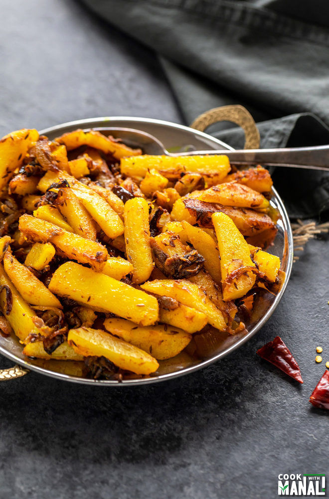

Bhujiya

Description
Bhujiya or in this case Aalo bhujiya is a dish cooked almost daily in Bihar. It is easy and quick to prepare and goes well with Dal-Chawal, roti or puri.
If a guest arrives then Puri